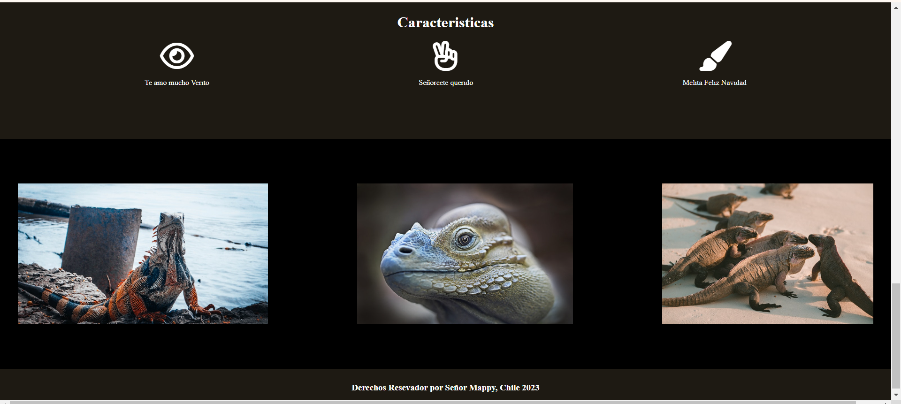

Patricio Ignacio Farías Pérez
Administrador Logistico
- Email: Patricio.farias2015@gmail.com
- Nacionalidad: Chilena
- Teléfono: +5694915xxxx
- Edad: 35 Años
Responsable, dispuesto a aprender nuevos conocimientos, respetuoso, excelente trabajando en equipos, confiable.
Estudios
Egresado de Contabilidad
Liceo Comercial JJLC 2006
Titulado Administrador Logístico
Instituto Profesional de Chile 2016
Cursando Full Stack JavaScript
Academia Desafio Latam 2024
Cursando Diseño UX/UI
Academia Desafio Latam 2024
Experiencias Laborales
Administrador Logístico
Centro de Distribución Keylogistic, Cerrillos, Chile.
Analista Programador
BairesDev SA, Chile.
Portafolio
-

- 